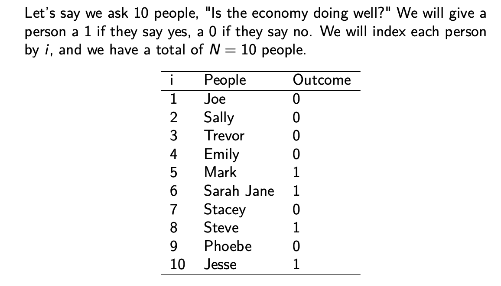
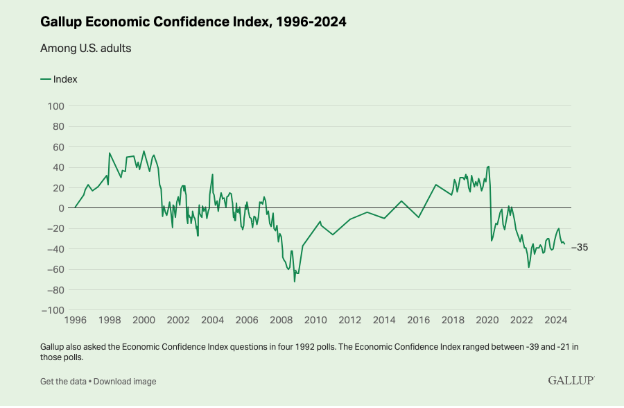
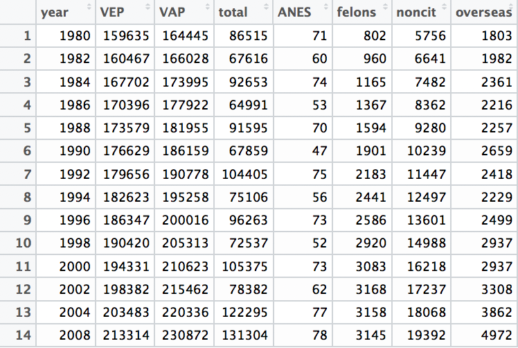

Outcome <- c(0,0,0,0,1,1,0,1,0,1) # Use commas to separate values2 Description
What are things we want to describe in political science?
- Unemployment rate, GDP
- Voter turnout, vote share for a party in an election
- Percentage of women in the labor force
- Poverty rates over time
What else? What does description help us achieve?
- Identify tendencies
- Identify patterns or trends
- Identify relationships between two or more factors
- Help us generalize from anecdotes, what is common vs. what is uncommon?
- Diagnose demand, needs, potential problems, likely outcomes
Generate ideas for other goals, such as explanation and prediction
2.1 Process of Describing
How do we go about a descriptive quantitative analysis?
- Substantive Expertise: Start with a topic, puzzle, or question (e.g., How is the economy doing?)
- Find outcome data relevant to that question (e.g., GDP)
- Start from a concept: what we want to describe (i.e., health of the economy)
- Move toward an “operationalization” (i.e., a way to measure it)
- Easy! except… social science is messy. Our concepts are rich, while our measures may be very narrow or concrete.
- For example, GDP is one way to measure economic health, but is it the only measure?
- Choose measures based on validity, reliability, cost
- Validity: how well does the empirical measure reflect the concept it is trying to measure (too broad vs. narrow, susceptible to external biases?)
- Reliability: how reproducible and stable is the measure across different researchers and slight variation in sample or measures
- Find multiple relevant units or “data points” depending on the descriptions and comparisons you want to make
- E.g., Multiple years of data (e.g., U.S., from 1900 to 2020)
- E.g., Multiple countries from one year (e.g., U.S. to Germany to other countries)
- Summarize the data to help answer the question
2.1.1 Example Process
- How is the economy doing?
- Find outcome data relevant to that question
- Let’s ask people
- Find multiple relevant units or data points
- We will ask several people. Each person will be a data point.
- Summarize the data
- Let’s take the mean

How would you summarize information in explaining it to another person? You would probably want to describe how most people feel about the economy. In other words, you would describe the “central tendency” of people’s responses (the central tendency of the data).
2.2 Summarizing univariate data
For a video explainer of the code in this section, see below. The video only discusses the code. Use the notes and lecture discussion for additional context. (Via youtube, you can speed up the playback to 1.5 or 2x speed.)
Univariate data refers to data coming from one “variable,” where a variable captures the values of a changing characteristic.
Our set of values is Outcome = {0,0,0,0,1,1,0,1,0,1}.
- We will call this a vector of values, where a vector is just a collection of things.
- Because our vector contains only numbers, we will call it a numeric vector.
- Each value can be indexed by
i, denoting the position of the value in the - For example, Jesse is in position
i=10of the vector, and his value is 1
We can create vectors in R by using c() and assigning <- it to an object we will call Outcome. Note: you will use the c() and <- assignment tool all of the time in this course!
We can extract a particular value within our vector using brackets and the value’s numeric position in the vector.
Outcome[10] # what value is in the 10th position?[1] 1We can overwrite whole vectors or values within a vector
Outcome <- c(5,0,2, 6,1,1, 7, 8, 0, 1) # oops we put the wrong numbers
Outcome [1] 5 0 2 6 1 1 7 8 0 1Outcome <- c(0,0,0,0,1,1,0,1,0,1) # no problem, just overwrite it
Outcome [1] 0 0 0 0 1 1 0 1 0 1Oops we accidentally type a 0 for Jesse.
Outcome <- c(0,0,0,0,1,1,0,1,0,0) # oops typo for Jesse
Outcome [1] 0 0 0 0 1 1 0 1 0 0Outcome[10] <- 1 # no prob bob. Assign a 1 in position 10
Outcome [1] 0 0 0 0 1 1 0 1 0 1Vectors do not have to be numeric. Character vectors contain a collection of words and phrases. In R, we use quotations around character values
Example: let’s create a vector of names that we will call People.
People <- c("Joe","Sally", "Trevor", "Emily", "Mark", "Sarah Jane", "Stacey", "Steve", "Phoebe", "Jesse")
People[10][1] "Jesse"We can use the R function class() to tell us the type of object we have.
class(Outcome)[1] "numeric"class(People)[1] "character"2.3 Functions to summarize univariate data
We will use many “functions” in R, which are actions that we request R to perform with data. Functions take one or more inputs that you provide, “under the hood” perform a series of actions, and then produces one or more outputs. For example, if we supply the mean() function in R with a set of numbers, R will take the average of those numbers and then report the result.
For univariate data (data based on a single variable or changing characteristic), often we are interested in describing the range of the values and their central tendency. A central tendency reflects the mean or median.
- range: the minimum (
min()) and maximum (max()) values - mean: the average value (
mean())
The average is the sum of the values divided by the number of values:
\(\bar{X} = \frac{\text{sum of values}}{\text{number of values}} = \frac{x_1 + x_2 + ... + x_N}{N}=\frac{1}{N}\sum_{i=1}^{i=N} x_i\)
Let’s do this in R for our set of 10 values
(0 + 0 + 0 + 0 + 1 + 1 + 0 + 1 + 0 + 1)/10[1] 0.4The average outcome is .4. Note: when a variable contains only 0’s and 1’s its mean is the proportion of 1’s. 40% of people think the economy is doing well.
2.3.1 Step-by-step: Using functions in R (overview)
A function is an action(s) that you request R to perform on an object or set of objects. For example, we will use the mean() function to ask R to take the mean or “average” of a vector.
- Inside the function you place inputs or “arguments.”
mean(Outcome)[1] 0.4R also has functions that take the sum sum() of a vector of values.
sumofvalues <- sum(Outcome)And that count the total number of values or “length” length() of the vector.
numberofvalues <- length(Outcome)Note that the below is also equivalent to the mean
sumofvalues / numberofvalues[1] 0.42.4 Combining vectors into a dataframe
When we know multiple things about a person (or any type of “unit”), it can be helpful to organize them so it is easier to access all of the information from the same place. This will take us to our first experience working with “dataframes,” a type of rectangular data object.
We will first manually create a dataframe, and in future sections, we will load pre-existing datasets as dataframe objects.
We can use the data.frame(tag = value) function to create a rectangular dataset by supplying multiple labels or “tags,” followed by a vector of the values associated with those tags. The tags become the column names of the dataframe.
This is easiest to understand when you see it in practice. We will supply the tags “Outcome” and “People” as column names, and for each, the vectors containing the values.
## creating a dataframe
surveyresults <- data.frame(Outcome = c(0,0,0,0,1,1,0,1,0,1),
People = c("Joe","Sally", "Trevor", "Emily", "Mark",
"Sarah Jane", "Stacey", "Steve", "Phoebe", "Jesse"))
surveyresults Outcome People
1 0 Joe
2 0 Sally
3 0 Trevor
4 0 Emily
5 1 Mark
6 1 Sarah Jane
7 0 Stacey
8 1 Steve
9 0 Phoebe
10 1 JesseNote that this has created a single object called surveyresults.
## Object type
class(surveyresults)[1] "data.frame"## ## How many observations (the rows)?
nrow(surveyresults)[1] 10## ## How many variables (the columns)?
ncol(surveyresults)[1] 2In a dataframe, we can still access a single column of values using the syntax dataframename$columnname
## Access the individual columns using $
surveyresults$Outcome [1] 0 0 0 0 1 1 0 1 0 1surveyresults$People [1] "Joe" "Sally" "Trevor" "Emily" "Mark"
[6] "Sarah Jane" "Stacey" "Steve" "Phoebe" "Jesse" We can even take the mean() of these columns in the same way we did above outside of a dataframe.
## Taking the mean
mean(surveyresults$Outcome)[1] 0.42.5 Summing up univariate description
Returning to our example, we found that 40% of people surveyed thought the economy was doing well. Surveying people about their opinions on how the country doing is a common way that social scientists use description. We could extend this exercise in many ways going forward, even with the same question.
- Start with a question: How is the economy doing?
- Let’s find a measure: Ask people if the economy is doing well.
- Find data points: Multiple people (we could stop there with the average!), or add more variables:
- Across time: Survey people across multiple years
- Across type of people: Survey different partisan groups
These types of trends are often used by news organizations and public opinion organizations like, Gallup.

This was just a first example of description in political science. There are many other ways to describe how the economy is doing and many other topics we might want to describe in politics.
2.6 Loading data into R
For this section, our motivating example will be methods to measure voter turnout in the United States.
Describing voter turnout
- What is a typical level of voter turnout?
- How has turnout changed over time?
- Is turnout higher in presidential years or in midterm years?
How can we measure turnout? Think about the validity, reliability, and cost of different approaches.
Example: Dataset on Voter Turnout in the U.S. across multiple years

In this dataset, each row is an election year. Each column contains information about the population, potential voters, or voter turnout. These will help us compute the turnout rate in a given year. To work with this dataset, we need to load it into R.
2.6.1 Working with datasets in R
For a video explainer of the code in this section, see below. The video only discusses the code. Use the notes and lecture discussion for additional context. (Via youtube, you can speed up the playback to 1.5 or 2x speed.)
Often the variables we care about are stored inside of rectangular datasets that we load into R (or have created manually, like the simple example in the previous section.)
- These have a number of rows
nrow()and columnsncol() - Each row is an “observation,” representing the information collected from an individual or entity
- Each column is a variable, representing a changing characteristic across multiple observations
When we import a dataset into R, we have a few options.
Option 1: Download dataset to your computer
- Move the dataset to your working directory
- Identify the file type (e.g., csv, dta, RData, txt)
- Pick the appropriate R function to match the type (e.g.,
read.csv(), read.dta(), load(), read.table()) - Assign the dataset to an object. This object will now be
class()ofdata.frame
turnout <- read.csv("turnout.csv")Click here for an alternative function for csv files.
Some scholars prefer to use the function read_csv to load csv data. It is better at handling more complicated types of data. We will not need to use this function in this course, but you may encounter it elsewhere.
To use this function, the first time we will go about using it, we have to first install a “package” called readr. Packages in R give us additional tools beyond what the base version of R provides. It is like installing an extra app on your phone.
install.packages("readr")Once we have that installed, now anytime we want to use the function, we will call (open) the “readr” package using library(), and then the syntax is just like using the read.csv function.
library(readr)
turnout <- read_csv("turnout.csv")Option 2: Read file from a url provided
- Need an active internet connection for this to work
- URL generally must be public
- Include the url inside the function used to read the data
turnout <- read.csv("https://raw.githubusercontent.com/ktmccabe/teachingdata/main/turnout.csv")class(turnout)[1] "data.frame"You can also open up a window to view the data:
View(turnout)2.6.2 Measuring the Turnout in the US Elections
Relevant questions with voter turnout
- What is a typical level of voter turnout?
- Is turnout higher in presidential years or in midterm years?
- Is turnout higher or lower based on voting-eligible (VEP) or voting-age (VAP) populations? We have a lot of people who are citizens 18 and older who are ineligible to vote. This makes the VEP denominator smaller than the VAP.
Voter Turnout in the U.S.
- Numerator:
total: Total votes cast (in thousands) - Denominator:
- VAP: (voting-age population) from Census
- VEP (voting-eligible population) VEP = VAP + overseas voters - ineligible voters
- Additional Variables and Descriptions
year: election yearANES: ANES self-reported estimated turnout rateVEP: Voting Eligible Population (in thousands)VAP: Voting Age Population (in thousands)total: total ballots cast for highest office (in thousands)felons: total ineligible felons (in thousands)noncitizens: total non-citizens (in thousands)overseas: total eligible overseas voters (in thousands)osvoters: total ballots counted by overseas voters (in thousands)
2.6.3 Getting to know your data
## How many observations (the rows)?
nrow(turnout)[1] 14## How many variables (the columns)?
ncol(turnout)[1] 9## What are the variable names?
names(turnout)[1] "year" "VEP" "VAP" "total" "ANES" "felons" "noncit"
[8] "overseas" "osvoters"## Show the first six rows
head(turnout) year VEP VAP total ANES felons noncit overseas osvoters
1 1980 159635 164445 86515 71 802 5756 1803 NA
2 1982 160467 166028 67616 60 960 6641 1982 NA
3 1984 167702 173995 92653 74 1165 7482 2361 NA
4 1986 170396 177922 64991 53 1367 8362 2216 NA
5 1988 173579 181955 91595 70 1594 9280 2257 NA
6 1990 176629 186159 67859 47 1901 10239 2659 NAExtract a particular column (vector) from the data using the $.
turnout$year [1] 1980 1982 1984 1986 1988 1990 1992 1994 1996 1998 2000 2002 2004 2008Extract the 10th year. Just like before! We use 10 to indicate the value of the year column in position (row 10) of the data.
turnout$year[10][1] 1998We can take the mean() of a particular column, too. Let’s take it of the total number of voters.
mean(turnout$total)[1] 89778.29And get the class() (Note: integer is just a type of numeric variable)
class(turnout$total)[1] "integer"We can also use brackets in the full data frame, but because our data frame has BOTH rows and columns, we cannot just supply one position i. Instead, we have to tell R which row AND which column by using a comma between the positions.
turnout[1,2] # value in row 1, column 2[1] 159635We can use the column name instead
turnout[1, "VEP"][1] 159635If we leave the second entry blank, it will return all columns for the specified row
turnout[1,] # All variable values for row 1 year VEP VAP total ANES felons noncit overseas osvoters
1 1980 159635 164445 86515 71 802 5756 1803 NAThe opposite is true if we leave the first entry blank.
turnout[,2] # VEP for all rows [1] 159635 160467 167702 170396 173579 176629 179656 182623 186347 190420
[11] 194331 198382 203483 2133142.7 Comparing VEP and VAP turnout
2.7.1 Creating new variables in R
Let’s create a new variable that is VAP that adds overseas voters.
# Use $ to add a new variable (i.e., column) to a dataframe
turnout$VAPplusoverseas <- turnout$VAP + turnout$overseasUnder the hood, what this is doing is taking each value of turnout$VAP and adding it to its corresponding values of turnout$overseas.
And, yes, this new variable shows up as a new column in turnout. Go ahead, View() it
View(turnout)This does not change the underlying turnout.csv file, only the turnout data.frame we are working with in the current R session.
- This is an advantage of using an R script.
- You don’t have to worry about overwriting/messing up the raw data.
- You start from the original raw data when you load
turnout.csv, and then everything else is done within R.
This is our new denominator. Now we can calculate turnout based on this denominator.
turnout$newVAPturnout <- turnout$total / turnout$VAPplusoverseasJust like with adding two vectors, when we divide, each value in the first vector is divided by its corresponding value in the second vector.
turnout$newVAPturnout [1] 0.5203972 0.4024522 0.5253748 0.3607845 0.4972260 0.3593884 0.5404097
[8] 0.3803086 0.4753376 0.3483169 0.4934211 0.3582850 0.5454777 0.5567409Let’s calculate the VEP turnout rate and turn it into a percentage. This time, we do it in one step.
- (total votes / VEP) \(\times\) 100:
turnout$newVEPturnout <- (turnout$total / turnout$VEP) * 100
turnout$newVEPturnout [1] 54.19551 42.13701 55.24860 38.14115 52.76848 38.41895 58.11384 41.12625
[9] 51.65793 38.09316 54.22449 39.51064 60.10084 61.55433Let’s change it from a proportion to a percentage. How? Multiply each value of turnout$newVAP by 100
turnout$newVAPturnout <- turnout$newVAPturnout * 100This multiplies each number within the vector by 100.
turnout$newVAPturnout [1] 52.03972 40.24522 52.53748 36.07845 49.72260 35.93884 54.04097 38.03086
[9] 47.53376 34.83169 49.34211 35.82850 54.54777 55.67409What is typical turnout?
mean(turnout$newVAPturnout)[1] 45.45658mean(turnout$newVEPturnout)[1] 48.94937We find that turnout based on the voting age population is lower than turnout based on the voting eligible population. This is a pattern that political scientists have examined, going back several decades. For example, in a 2001 article McDonald and Popkin show that is it the ineligible population that grew from the 1970s onward and not the population of people who simply prefer not to vote. (See more here.)

2.8 Comparing Presidential vs. Midterm turnout
How does turnout compare in presidential vs. midterm years? Sometimes using a single summary of turnout may obscure important underlying differences in the data. To detect these differences, we may want to summarize different parts of the data.
Oh dear. We need to extract specific years from the turnout data frame. Which rows contain the years we want?
turnout$year [1] 1980 1982 1984 1986 1988 1990 1992 1994 1996 1998 2000 2002 2004 2008Ok: rows 1,3,5,7,9,11,13,14 are the presidential. And rows 2,4,6,8,10,12 are midterms.
## we can extract all of these at once by using c()
turnout$year[c(1,3,5,7,9,11,13,14)] # presidential[1] 1980 1984 1988 1992 1996 2000 2004 2008Let’s take the mean VEP turnout for presidential years.
mean(turnout$newVEPturnout[c(1,3,5,7,9,11,13,14)])[1] 55.983Let’s take the mean VEP turnout for midterm years.
mean(turnout$newVEPturnout[c(2,4,6,8,10,12)])[1] 39.5712Let’s take the difference by storing each mean and then subtracting
mean.VEP.pres <- mean(turnout$newVEPturnout[c(1,3,5,7,9,11,13,14)])
mean.VEP.mid <- mean(turnout$newVEPturnout[c(2,4,6,8,10,12)])
mean.VEP.pres - mean.VEP.mid[1] 16.41181Presidential turnout, on average, is higher than midterm turnout.
2.8.1 R shortcut for writing vectors
Sometimes we write numbers that are in a predictable sequence (e.g., 1,2,3,4,5). In R, we have functions that prevent us from having to type each number when this is the case.
c(1,2,3,4,5) # is equivalent to:[1] 1 2 3 4 51:5 # is equivalent to:[1] 1 2 3 4 5seq(from = 1, to = 5, by = 1)[1] 1 2 3 4 5We can use the last one to our advantage to extract the midterm years, which go by 2
mean(turnout$newVEPturnout[c(2,4,6,8,10,12)]) # is the same as[1] 39.5712mean(turnout$newVEPturnout[seq(2, 12, 2)])[1] 39.5712Not a big deal now, but imagine if you had to write 100 numbers or 1 MILLION NUMBERS!
2.9 Creating dataframes from within R
A reminder that while importing data from outside of R is the most common way to work with dataframes in R, you can create dataframes from inside R. Ultimately, a dataframe just binds together multiple vectors / columns to create a rectangular object. Let’s get additional practice with this using our voter turnout data.
Let’s say we want to create a dataframe with columns indicating just the midterm years and their VEP turnout. These correspond to the two vectors:
turnout$newVEPturnout[seq(2, 12, 2)]turnout$year[seq(2, 12, 2)]
In R, you can create a rectangular data.frame object with the data.frame function.
- Within this function, you can make several entries that follow the syntax
colname = values. We supply what we would like the name of the column to be, such asmidyear, and then provide R with a set of values. We can then provide a comma and add more columns.- You just want to make sure each column has the same number of values.
midtermdata <- data.frame(midyear = turnout$year[seq(2, 12, 2)],
VEPturnout = turnout$newVEPturnout[seq(2, 12, 2)])You can supply the values for each column using objects or just vectors of raw numeric values like the below:
midtermdata <- data.frame(midyear = c(1982, 1986, 1990, 1994, 1998, 2002),
VEPturnout = c(42.13701, 38.14115, 38.41895, 41.12625, 38.09316, 39.51064))The result is a nice rectangular dataframe similar to what we loaded using the turnout.csv dataset from outside of R.
midtermdata midyear VEPturnout
1 1982 42.13701
2 1986 38.14115
3 1990 38.41895
4 1994 41.12625
5 1998 38.09316
6 2002 39.51064Now, because our dataframe has a different name. If we want to access columns from this dataframe, we start with midterm$ followed by the variable name.
midtermdata$midyear[1] 1982 1986 1990 1994 1998 20022.10 Wrapping Up Description
In this section, we have described voter turnout using multiple measures and types of elections. There are several other questions that political scientists may be interested in when it comes to voter turnout.
For example, during and following the 2020 elections, many states passed laws that changed election procedures: Ability to vote by mail, Ballot dropboxes, Length of early voting. What else?
- What effect (if any) do these laws have on voter turnout?
In the next section, we start to examine how to evaluate causal claims.
2.10.1 Summary of R tools
We have touched on a number of R tools thus far. Here is a summary of some of the key items to remember going forward:
setwd(): sets the working directory in R, which tells R which folder on your computer contains the datasets or other R files where you will be working. You should get into the habit of setting your working directory each time you work in RStudio.- Can set this in the toolbar Session -> Set Working Directory -> Choose Directory, followed by clicking the “Open” button on the folder where you want to work.
- Example:
setwd("~/Downloads/Data Science")
##: Hashtags are used to help annotate your code. Anything behind a hashtag is treated as plain text+ - * /: These are some of the mathematical operators you can use in R- You can also control which operations are performed first using
()just like you would do with math outside of R. For example, try to compare the answer to6 + 4 * 3with(6 + 4) * 3
- You can also control which operations are performed first using
<-: This is an assignment tool that allows us to store calculations, vectors, datasets, and more as objects in R.- Example:
sum53 <- 5 + 3creates an object calledsum53that stores the calculation on the right.
- Example:
[]: Brackets are used to extract specific components of objects we create. The number(s) inside the brackets tell us which entries to extract.- Example:
Outcome[2]will tell us to extract the second entry in the objectOutcome - Note: when we use datasets, the brackets will have two entries, one corresponding to the row entry and one corresponding to the column. Example
turnout[1,2]means the entry in the first row and second column.
- Example:
Functions We have already started using a number of functions in R, which are operations we ask R to do for us, such as creating vectors, importing data, or summarizing data by finding the mean, range, etc. Functions come in the same format, which starts with the function name followed by parentheses. Example: mean(). Each function then takes a particular input(s). When you “run” a line of code with a function, R applies the function to the input.
c(): This is a function that combines a set of values into a vector in R. The values can be numbers or text items and should be separated by commas. If text, each text item should be in quotation marks.- Example:
Outcome <- c(3, 4, 6, 2, 1) - Example:
People <- c("Sam", "Julie", "Mark")
- Example:
mean(),median(),min(),max(),range(): These functions summarize vectors that are numeric/integers in nature.- Example
mean(Outcome)takes the average of the values in theOutcomevector
- Example
read.csv(): This function loads a rectangular .csv file into R as a data.frame- Example:
turnout <- read.csv("turnout.csv") - Not all datasets will be .csv files. In the future, we will use other functions, such as
load()orread.dta()to import datasets of different file types.
- Example:
Dataframes
We have started working with dataframes in R. These objects are rectangular datasets that include a collection of vectors. Every column in a dataframe generally represents a different concept or “variable,” while each row represents a different unit or “observation.”
$: When we are working with vectors that are inside of a dataframe (the columns inside of a dataframe), we use the$to access them.- Example:
turnout$yearwill show us the values in theyearcolumn vector inside ourturnoutrectangular dataframe
- Example:
nrow(),ncol(),dim(),head(),names(): These functions help us explore the dataframes by telling us the number of rows and columns (the dimensions), giving us a sneak peek of the first 6 rows of the dataframe, or showing us the names of the variables (columns) in the data.- Example:
nrow(turnout)
- Example: